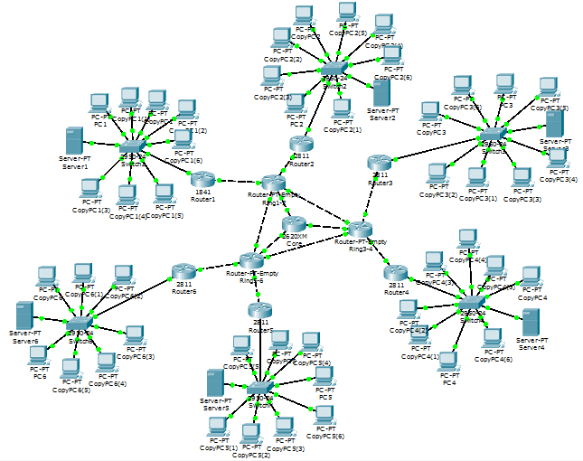

Cisco Packet Tracer - Agora liberado para todo mundo
BlogCompartilhe esse post nas redes sociais...
Olá Homelabers!
UPDATE: Dois dias depois da publicação desse post, saiu a versão 7 do Cisco Packet Tracer. Mais informações aqui no blog Lab Cisco do Samuel Brito (@shbbrito)
No post de hoje vou falar sobre o Cisco Packet Tracer.
Quem é do mundo Cisco já deve ter ouvido falar do Packet Tracer pelo menos uma vez.
O Cisco Packet Tracer é um simulador de redes, bastante utilizado no treinamento para a certificação CCNA (Cisco Certified Network Associate).
O software permite ao usuário simular a configuração de roteadores e switches da Cisco usando uma interface de linha de comando.
Até algum tempo atrás, para conseguir o Packet Tracer, você precisava estar matriculado no curso Cisco Networking Academy ou por outros meios não muito católicos :) Update: Fui pesquisar e distribuir o PT (Packet Tracer) não era “proibido”, mas isso era uma dúvida para muita gente.
[caption id="attachment_1662” align="aligncenter” width="645”] Exemplo de topologia de rede com o Packet Tracer[/caption]
Essa semana, eu vi um post no reddit (/r/ccna) que o Packet Tracer estava liberado para todos, e para conseguir fazer o download, basta fazer um curso online e grátis (Free as in Beer) de 1 hora no site do Net Academy (em Inglês).
É isso galera, para quem se interessa por redes, vale a pena conhecer o Packet Tracer.
Para quem trabalha com SO, Servidores, etc, é sempre bom estudar pelo menos um pouco sobre Redes. Ajuda bastante!
Eu fiz um curso preparatório para o exame CCNA há mais ou menos 2 anos. Abriu a minha cabeça para muitas coisas.
Para quem quiser se aprofundar mais no tema, vou deixar alguns links bacanas.
http://labcisco.blogspot.com.br/p/laboratorios.html - Diversos laboratórios de redes para serem usados com o Packet Tracer
http://www.packettracernetwork.com/labs/packettracerlabs.html - Mais laboratórios CCNA
Até a próxima!
VC
Compartilhe esse post nas redes sociais...Valdecir Carvalho
Nerd e pai orgulhoso da Mariana e João. Profissional Sênior de TI com foco em arquitetura de infraestrutura e cloud computing. Blogueiro, podcaster, palestrante, amante de comunidades técnicas, fotógrafo aposentado e adora jogos antigos.
#vExpert · #VMUGLeader · #VUGBrasil · #vBronwBagBrasil · #VeeamVanguard